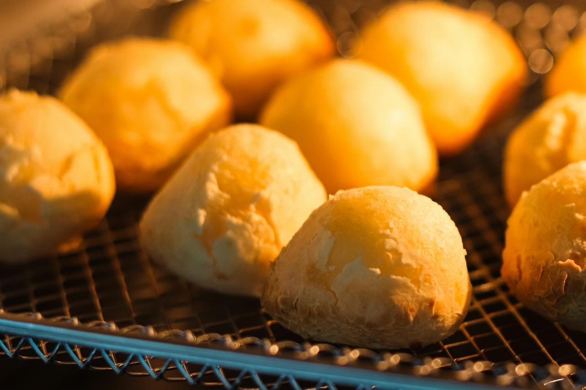
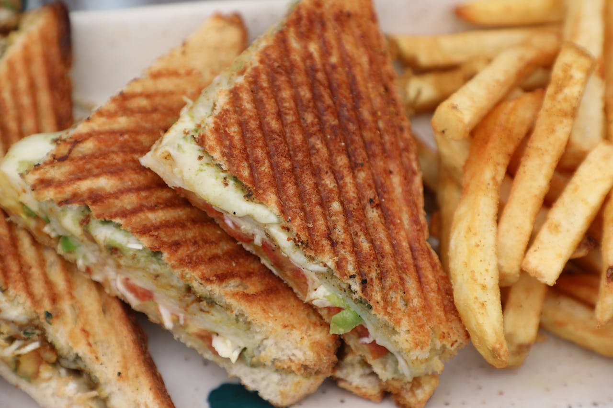
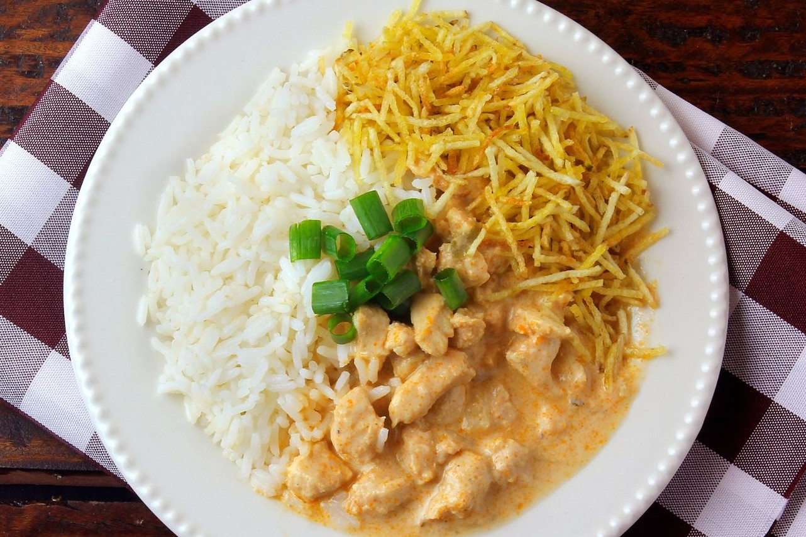
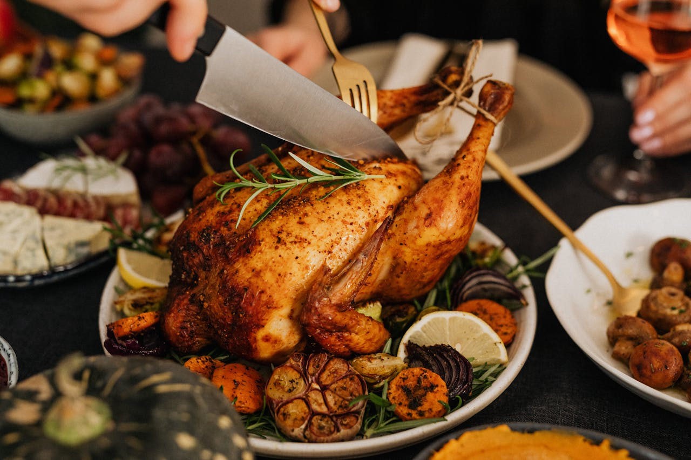
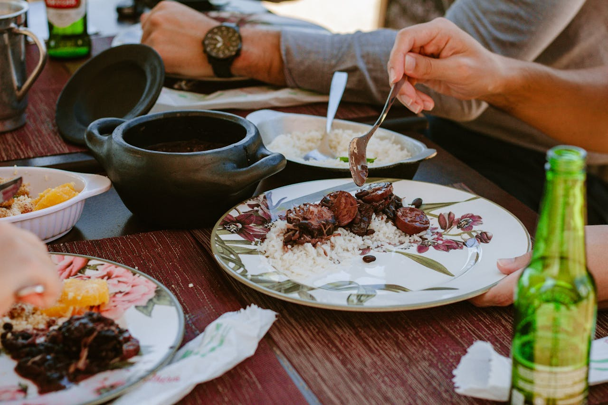

Receitas Maravilhosas para Você
Café da Manhã ☕
Panquecas Americanas
As panquecas americanas são macias, fofinhas e perfeitas para um café da manhã especial. Diferente das panquecas tradicionais, elas são mais grossas e aeradas, criando uma textura irresistível.

Pão de Queijo Mineiro
O pão de queijo é um dos maiores símbolos do café da manhã brasileiro. Crocante por fora, macio por dentro e com muito sabor de queijo, essa delícia é impossível de resistir — especialmente quando sai quentinha do forno!
Misto Quente
Clássico absoluto das manhãs, o misto quente é fácil de preparar e delicioso. A combinação de queijo derretido com presunto e pão quentinho é sucesso garantido.
Almoço 🍽️
Estrogonofe de Frango
Um dos pratos mais populares do Brasil, o estrogonofe de frango é cremoso, fácil de fazer e agrada a todos!
Frango Assado
O clássico do domingo! Frango dourado, suculento e com batatas macias é sempre uma ótima pedida.
Feijoada Brasileira
A feijoada é o prato símbolo da culinária brasileira. Rica em sabor e história, é ideal para almoços de fim de semana em família ou com amigos.
